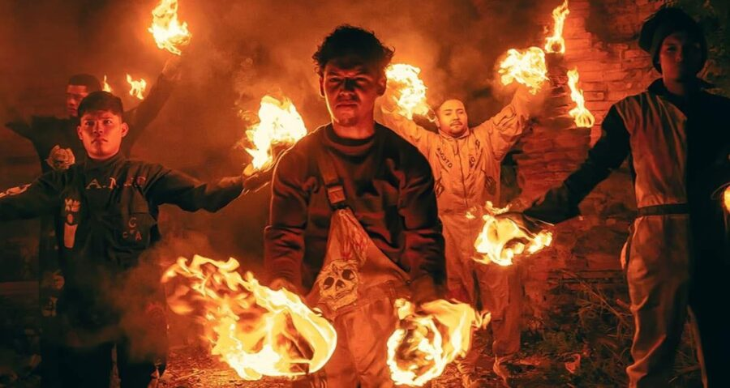
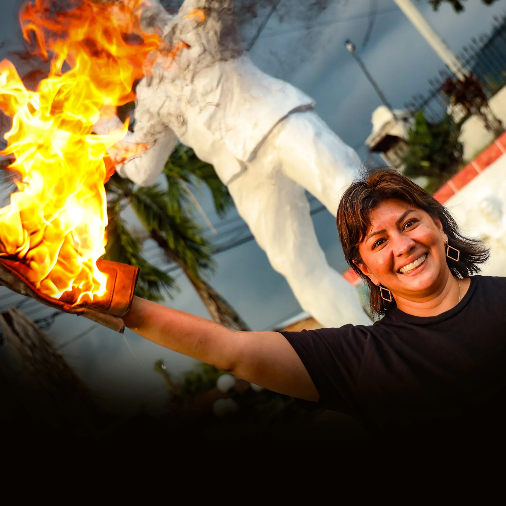
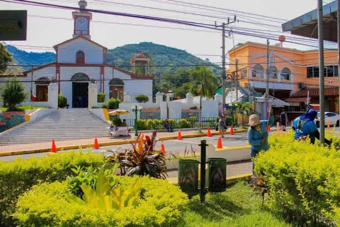
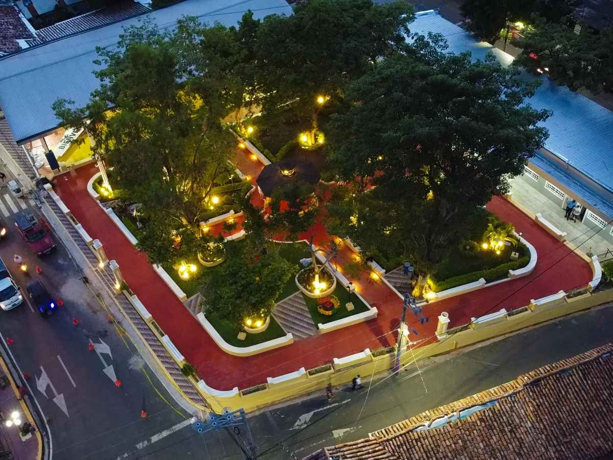

Lanzamiento de bolas de fuego
El momento más representativo de la celebración es el lanzamiento de bolas de fuego entre los participantes. Esta actividad es una tradición característica que atrae a visitantes de diferentes lugares de El Salvador.

Las Bolas de Fuego de Nejapa son una de las celebraciones culturales más conocidas de El Salvador. Esta tradición se realiza cada año en el municipio de Nejapa, departamento de San Salvador, durante las fiestas en honor a San Jerónimo.
La celebración reúne a habitantes y visitantes en una noche llena de emoción, música y tradición. Uno de sus momentos más llamativos es el lanzamiento de bolas de fuego entre los participantes, una costumbre que forma parte de la identidad cultural de Nejapa.

Conoce algunos de los elementos que forman parte de esta tradicional celebración de Nejapa.
El momento más representativo de la celebración es el lanzamiento de bolas de fuego entre los participantes. Esta actividad es una tradición característica que atrae a visitantes de diferentes lugares de El Salvador.

Durante la celebración, Nejapa se llena de alegría, música y la presencia de familias y visitantes. El ambiente festivo permite disfrutar de una de las tradiciones culturales más llamativas del municipio.

Las Bolas de Fuego forman parte de las fiestas tradicionales de Nejapa en honor a San Jerónimo. Estas celebraciones reúnen costumbres religiosas, culturales y actividades comunitarias.
Nejapa es el lugar donde se desarrolla esta celebración cultural. Conoce algunos espacios relacionados con la experiencia de visitar el municipio.

El centro del municipio es uno de los espacios donde se vive el ambiente de las fiestas tradicionales. Durante la celebración se reúnen habitantes y visitantes para disfrutar de las actividades culturales.
Ubicación: Nejapa, San Salvador, El Salvador
📍 Ver ubicación
La iglesia es un lugar relacionado con las celebraciones religiosas en honor a San Jerónimo. Forma parte del patrimonio cultural y religioso del municipio de Nejapa.
Ubicación: Nejapa, San Salvador, El Salvador
📍 Ver ubicación
El parque central es un punto de referencia del municipio y un espacio para conocer parte de la vida cotidiana y las tradiciones de la comunidad nejapense.
Ubicación: Nejapa, San Salvador, El Salvador
📍 Ver ubicaciónElige el día del evento, selecciona una tour operadora, un guía o el transporte, indica el número de personas y agrega tu reserva al carrito.
Víspera de la celebración, con actividades culturales y presentaciones en Nejapa.
Recorrido por las actividades culturales de la víspera, con música y presentaciones en el centro del municipio.
$15 por persona
Caminata por el parque central y la iglesia, con explicación de la historia y las tradiciones del municipio.
$20 por grupo

Viaje de ida y vuelta a Nejapa, con salida por la tarde.
$8 por persona
Día principal: actividades durante el día y la conmemoración con bolas de fuego por la noche.
Acompañamiento durante el día y ubicación segura para presenciar la conmemoración de la noche, con indicaciones de seguridad.
$20 por persona
Explicación del origen de la tradición, el recuerdo de la erupción de 1658 y su relación con San Jerónimo.
$25 por grupo

Vehículo con conductor para llegar a Nejapa y regresar después de la celebración nocturna.
$45 por vehículo